How I built it, and the calls along the way
I built agenthand solo, over the nine days of this hackathon. This chapter is the workshop floor: the tries, the judgment calls, and the one beautiful picture I refused to use. The stories after it are the product, told at reading pace.
The perfect picture I would not use
The left picture was made with Muse's image generation, and it out-paints the models agenthand is allowed to call. The bike in it is my bike, unaltered. The courtyard around it is not agenthand's work: Muse generated that background, and the tool had no part in it. It is, honestly, the prettier picture, and I kept it pinned up as the look target for the whole project.
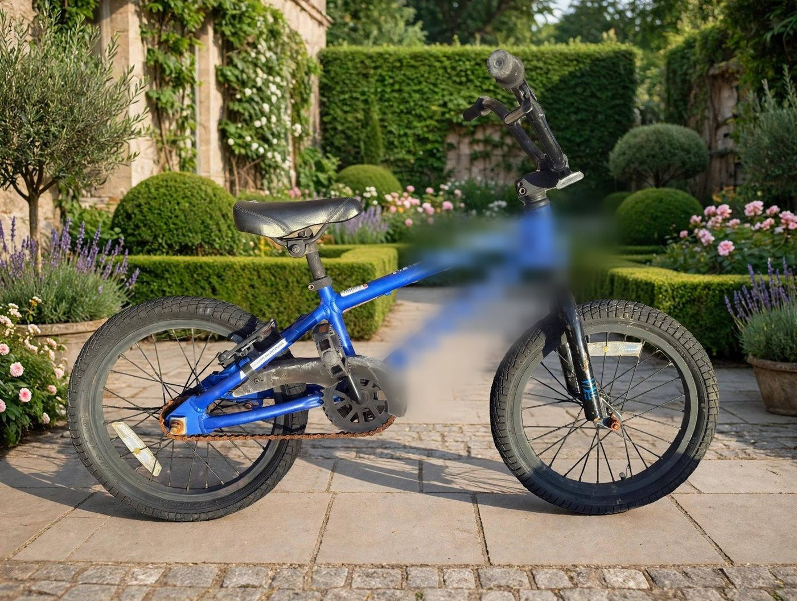
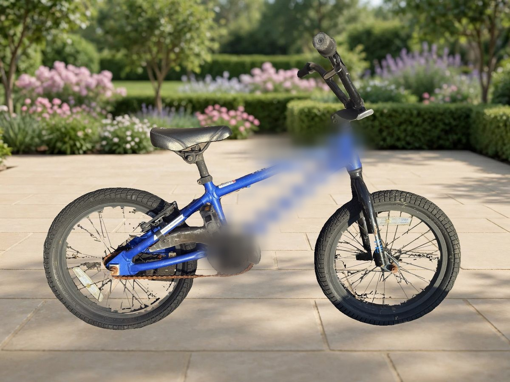
THE PERFECT ONEMade with Muse's image generation while art-directing this project. The bike is unaltered; the background was not made by agenthand. Not an agenthand output. Nothing in it is receipted.
THE ONE THAT SHIPSThrough agenthand, on the Meta models the server calls. Receipt 33 in the Proof Graph: proof core 4,053,953 pixels checked, 0 changed, margin rebuilt and counted.
That distinction is exactly why the picture belongs in this story and not in the demo. The demo sells the tool, so everything in it has to be an actual agenthand output carrying a receipt. This background is not one, so the picture carries no receipt; it is a promise a picture makes. There is a second, colder reason too: the same class of model, given this bike on another take, repainted the wheels and the spokes melted. Prettiness and faithfulness turned out to be different jobs.
agenthand's runtime stays Meta-only, by the hackathon rules and by my choice, so its rooms are plainer for now. I would rather show that gap than hide it. The proof layer underneath, the part that says the product never changed, holds no matter which model painted the room. That layer is the part I am actually selling.
Five ways to fix a wheel
The bike's wheels ate more hours than any other single problem in the build. A wheel is thin spokes over a busy background, and every easy answer failed in an instructive way.
1 · Ask the model to fix the whole picture. The prettiest path, and dead on arrival: the edit repainted the wheels along with the room, and the spokes melted.
2 · Draw the spokes in code over the real cut. Fully provable and visibly fake, geometry with zero real photo pixels in it. It failed as a picture and earned its keep anyway, as the control everything else gets measured against.
3 · Suppress the background frequencies in the photo itself. It recovered 138,892 genuine spoke pixels, real photograph, and still read wrong to the eye. A failure as an image. As evidence, it proved the real pixels were there to recover.
4 · Unmix every pixel, closed-form matting. Solve, per pixel, how much of it is spoke and how much is background showing through. Slow and unglamorous, and it recovered more of the real wheel than anything before it.
5 · Ship the hybrid. Verbatim spokes where the cut is certain, unmixed real pixels where the solver can grade them, drawn fill only where the photo gives up nothing. The final count: 278,417 real photo pixels kept out of a 381,802-pixel margin, every drawn pixel counted on the receipt.
The wheel taught the build its central habit: use the real pixels first, and count whatever you had to invent.
The judgment call: two zones
Underneath the wheel fight sat a harder question. A mask is an estimate. It will be wrong by a few pixels somewhere on almost every real photo, and a proof system that shatters over a three-pixel error is a proof system nobody can use. A project manager adds a buffer to an estimate because the estimate will be wrong somewhere. I gave the proof a buffer too.
Zone one is the proof core: the cut pulled back by a small margin. Those pixels are the product beyond argument, copied verbatim, hashed and checked, and the claim of zero changes applies to them in full. Zone two is the repair margin: the ring the pull-back removed, plus the thin structures I declare fragile, spokes first. The margin may be rebuilt with intelligence. Every rebuilt pixel is counted and disclosed wherever the receipt appears, and none of it is ever described as original. In the film, the thick cyan outline around each product is that margin, drawn where everyone can see it.
Splitting the claim felt like weakening it for about an hour. Then the opposite became obvious. A claim with a disclosed margin can survive contact with real photos. A claim of total perfection survives until the first bicycle.
Experiments I tried, and judged
None of the four below is in the product you can install. Each was built properly, run against the real thing, and judged on what it did. I am prouder of this list than of most things that shipped.
The generated seamDID NOT SHIP
I rebuilt both builds from a single generated contract, every shape and constant produced from one declaration, to see whether drift between the Rust and Python builds could be designed out at the source. It matched the original on speed and on the frozen replay. It caught surface drift the original missed. It also structurally missed the value-level drift that only the shared conformance fixture catches. Judgment: independence between the two builds is worth more than generation. The seam becomes the first architecture upgrade after this submission, with the fixture kept on as referee.
The metric-plate gateDID NOT SHIP
A patch that measures the source photo at cut time, camera angle, light direction, ground line, then orders the generated plate to match the measurements, verifies the finished picture, retries once, and refuses honestly when the geometry still disagrees. In live runs, all four of its verdicts fired: a check that could not complete, a mismatch whose retry my own spend cap refused to fund, a mismatch retried and then refused outright with the error PLATE_GEOMETRY_MISMATCH, and a clean first-try pass on a photo of my wallet. Judgment: the machinery works. It lives on its own branch, as the vision fallback for the angle problem in the next entry.
The tilt-capture pageDID NOT SHIP
Built and proven the day before submission, on Nov 3, with the deadline the next day. One web page that takes the photo and writes the camera's tilt into the file itself, the way survey apps stamp a shot, so the angle arrives with the picture instead of being guessed from pixels. On my own phone it worked end to end: three photos arrived carrying their angles, top-down at minus 80.9 degrees, high at minus 38, eye level at minus 14.9, each one read back exactly from the file. Then I ran the head-to-head test. The shipping tool ignored the embedded angle completely and painted an eye-level room for all three: agenthand's tools cannot recognize angles yet. Judgment: the data path is proven, the angle reader is the first post-submission build, and the experiment never appears in the demo. It did produce one thing on the day: I had Muse file a feature request with Meta's Muse team, in wording I approved myself, and delivery was confirmed. Attaching a photo in Muse re-encodes it, and the re-encode strips the shot angle; the request asks Muse to pass the capture angle through in a future update, so a tool downstream can read the angle the camera already knew.
The mask editDID NOT SHIP
The shortest experiment of the build. I tried to hand the image model a mask, so it could repaint the background and only the background. The edit endpoint rejected the request in one line: the mask field is not supported. Two cents of API spend to learn that the door does not exist. Judgment: closed and documented. It also quietly explains the product's shape: agenthand composites the product itself, because no model can be handed the background alone.
One database ran the build
I am one builder working with several AI agents, and agents drift. A call made at midnight gets half-remembered by morning, and a small decision missed in one lane quietly contradicts another lane's work. So early on I built a tracker: a plain SQLite database on my own machine, driven by a small Rust tool I wrote for it on rusqlite. Every decision, milestone, and workflow step went into it as it happened. The film lives in it too: its scenes, all twelve chapters, and every claim a chapter makes, tied back to the run and the receipt behind it in the Proof Graph.
As it stands it holds every decision and event from the build, milestones and open items included, with hash-verified copies synced so every lane, and I, read the same truth. The standing rule on top of it: when memory and the database disagree, the database wins. Plain machinery. It is why nine days of multi-agent building reads as one project instead of five. This page is checked against that same database before it ships, so the numbers here cannot quietly drift from the record either.
The partner on the build
The credit on this project says solo, and the tracker says one builder. Both are true, and both leave something out. I built agenthand with Meta's Muse as my agentic partner, and for most of the nine days Muse was the orchestrator of the whole build: coordinating the parallel work lanes, running the adversarial reviews, driving the test runs, and keeping the records straight while I made the calls. When a lane needed an experiment built, Muse built it: the generated seam, the metric-plate gate, the tilt-capture page, and the conformance work all came out of that partnership, not out of my evenings alone.
Muse also tested the finished tool, through its own front door. The live end-to-end tests of the shipping build ran through Muse's own MCP connector: nine live chains on everyday objects from around the house, a wallet case, a microwave tower, a chair, a stock pot, a pack of wipes, a microscope, a pendant light. Every chain ran identify, cut_out, and draw against the real server, and every receipt came back with 0 pixels changed, for $0.185116 in settled calls. The tool's first independent user was the agent that helped build it, and it used the same connector any other agent would.
My verdict, plainly: I think it is amazing, and I could not have done this without Muse.
Tied into Meta, everywhere it honestly fits
From the first day, the aim was deliberate: tie agenthand to as many Meta products, tools, and venues as it honestly fits, and let the receipts be the part that travels. So every model call the tool makes at runtime is a Meta model. Muse Spark 1.3 reads the photo and writes the listing. SAM 3.1 draws the mask. Muse Image 1.0 paints the room. On narrated room runs, Muse Spark Open, served through Baseten, returns the transcript and the sale intent in one call. The film's narration is Meta MMS; my own recorded voice is in it once, on the "Zero changed" line. The protocol the tools speak is MCP, so any agent that speaks it can pick them up.
The venues are Meta's too. The stories in this book live where people already buy and sell: Marketplace listings, Instagram, and packets travelling over WhatsApp and Messenger, staged photo and receipt together. Threads was in the plan early and got cut during production; the four above are where the stories actually happen. A seller's customers are already in those apps. agenthand just makes sure the picture they see there can prove itself.
Everything in the demo carries a receipt. That was the rule from the start.
Everything on this page runs on that rule: the stories below, how the tools work, the conformance suite that keeps the two builds honest, and the Proof Graph you can re-check yourself.
One photo of a suitcase
The whole product, in the first scene of the film.
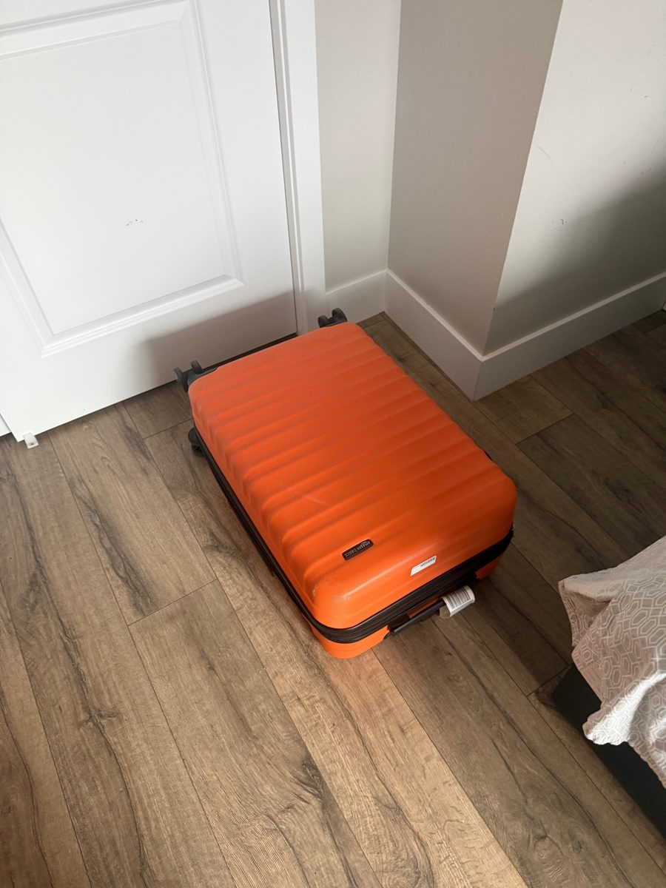
An orange hard-shell suitcase, photographed where it stood. agenthand cuts it out of that photo, stands it in a bright room it has never been in, and writes the listing. The suitcase in the staged picture is the suitcase from the photo. Not a render of a similar suitcase. The same pixels: 223,600 checked, 0 changed on the receipt.
WHAT THE TOOL DID
identify (Muse Spark 1.3) named the item and drafted the listing copy. cut_out (SAM 3.1) drew the mask. draw (Muse Image 1.0) painted the new room around it, and only the room.
223,600 / 0product pixels checked / changed on this run's receipt
See it in your room before you buy it
The same machinery, pointed the other way: at somebody else's listings.
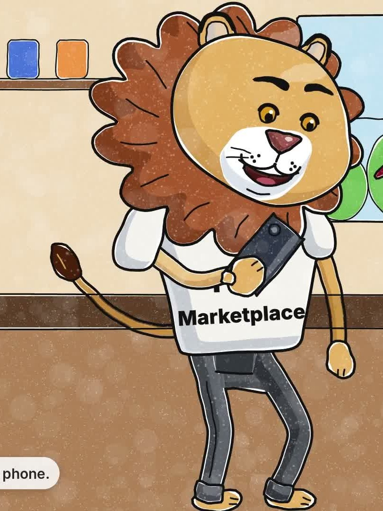
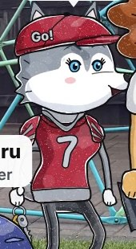
John is furnishing a rental from marketplace listings across town. agenthand puts each find into a photo of his room before he spends anything on it: a purifier, a suitcase, whatever he is eyeing, judged against his own walls first. Changed his mind? Take an item back out and the room is his again.
WHAT THE TOOL DID
The placement step itself calls no model. It composites cutouts that already exist, locally, into the photo of the buyer's room, verifies the result the same way as a seller staging, and a placed item can be lifted back out cleanly. The cutouts it starts from were made earlier by the usual chain: identify (Muse Spark 1.3) named the item, cut_out (SAM 3.1) lifted it from its photo, draw (Muse Image 1.0) staged it.
Where a marketplace withholds the original listing photo, the placed photo is a labeled stand-in, and the picture says so on itself.
The bike, and the honest receipt
The hardest photo in the film: thin spokes against a busy garden.
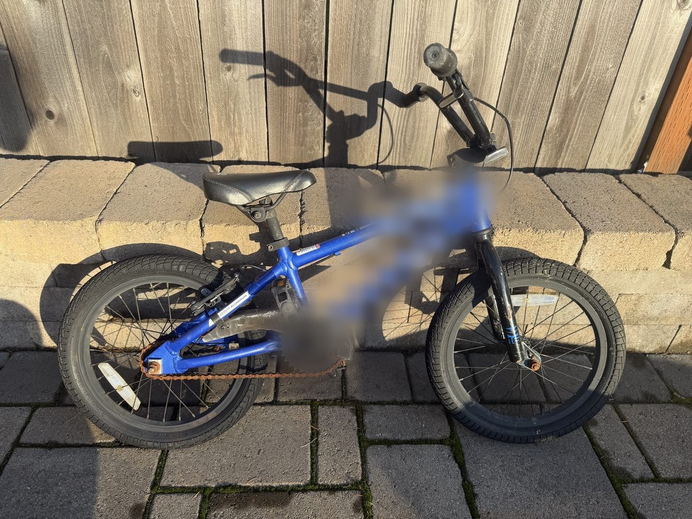
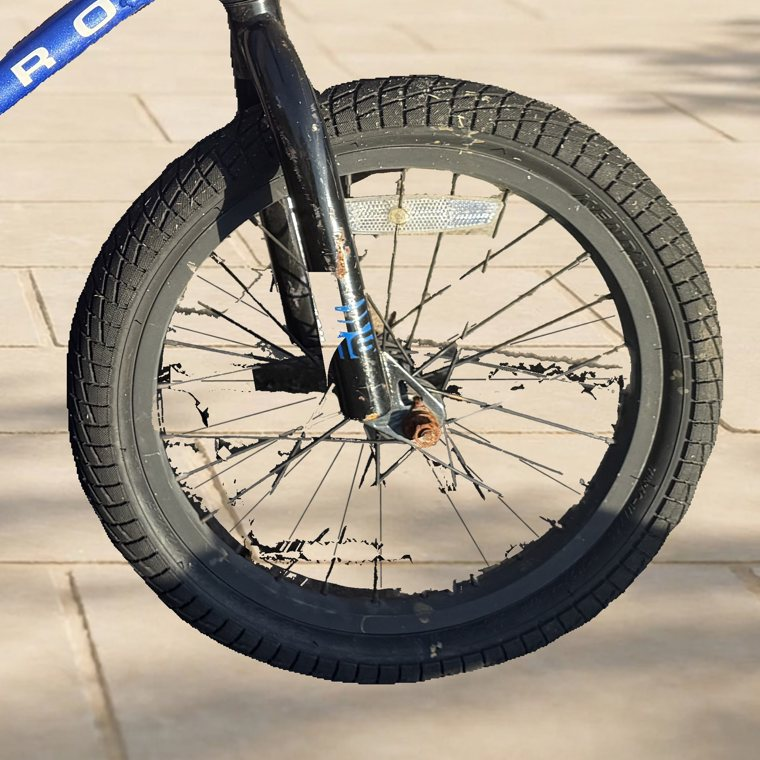
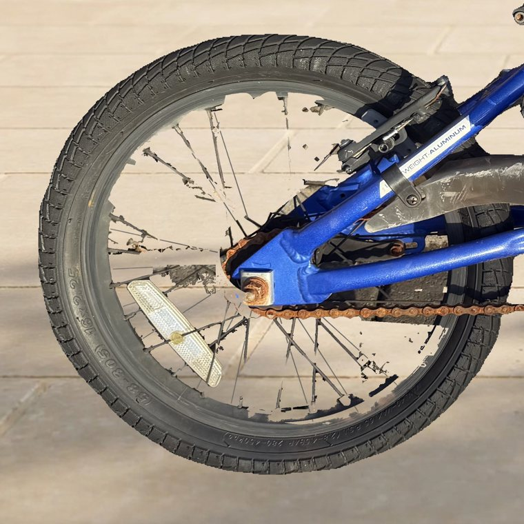
A cut is an estimate, and a bicycle is where estimates go to die: the mask frays exactly where the spokes are thinnest. So the receipt splits the product in two. The receipt covers the bike's core, pixel for pixel. The margin and the spokes are rebuilt, and counted. Nothing rebuilt is ever claimed as original.
WHAT THE TOOL DID
The run itself: identify (Muse Spark 1.3) named the bike, cut_out (SAM 3.1) drew the mask, draw (Muse Image 1.0) painted the courtyard plate. The two-zone split, the unmixing, and the spoke recovery are local code; no model touches them. The core is the cut pulled back by a small margin; those pixels are copied verbatim and checked. The ring the margin removed, spokes first, may be rebuilt, and every rebuilt pixel is counted on the receipt.
4,053,953 / 0proof-core pixels checked / changed
381,802margin pixels, counted: 278,417 real photo pixels recovered by unmixing, the rest drawn and disclosed
The packet that becomes a bid
Proof is only useful if it can leave the building.
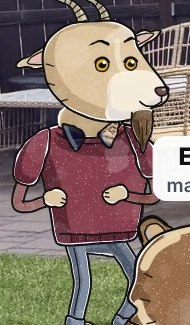
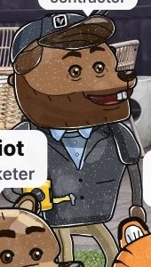
Travis is not selling from his own driveway; he is sending work to Brandon. The packet he sends is staged photos with the receipts attached, so Brandon is not taking Travis's word for what the pictures show. Brandon checks the proof himself, and the packet comes back as a bid.
WHAT THE TOOL DID
Every staged photo in this book carries its Fidelity Lock receipt: what was checked, how many pixels, how many changed. The receipt is a file, so it forwards like any other attachment and can be re-verified by whoever receives it. The evidence travels with the pictures. The packet step itself calls no model; the work behind it ran locally, and so does the re-check at the other end.
A record of how you left it
The same receipt, working as a witness.
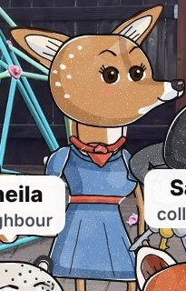
Moving out means an argument you would rather have evidence for. Ana walks the rooms with her phone, and agenthand turns each photo into a condition record anyone can open from a link: the picture, the proof it is untampered, and the notes. Even the flaws stay in. A record that hid them would not be worth sharing.
WHAT THE TOOL DID
The run behind the film's record checked 582,374 pixels, 0 changed, cross-verified by two independent checkers with identical counts. The run's model steps were cut_out (SAM 3.1) and draw (Muse Image 1.0); the checkers ran locally. Its cut-quality grade was RESHOOT, because a magnet and a paper stack overlapped the top edge of the photographed sheet. That grade is printed in the record, on purpose.
582,374 / 0pixels checked / changed on the record's receipt, caveat included
The yard, furnished from real listings
A kid's plan for the backyard, priced like a grown-up's.
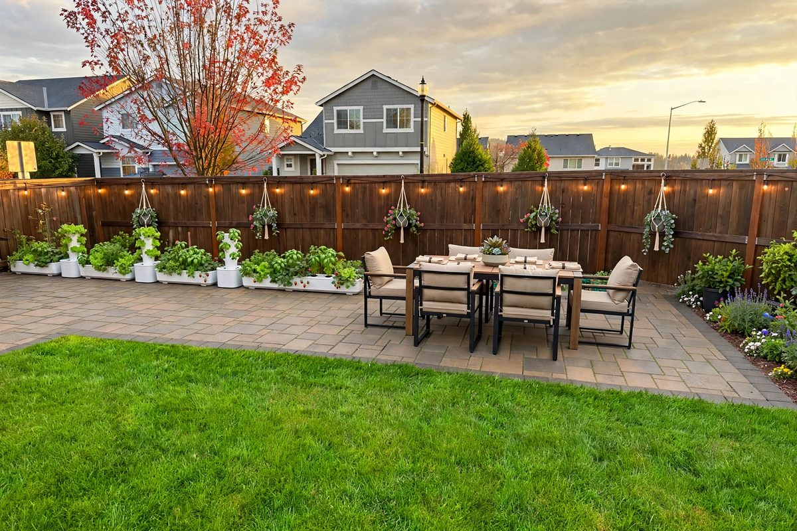
Nova has plans for the backyard. agenthand stages the plan into the real yard photo and prices every piece from real local listings, so the dream comes with a number attached: the dining set, three hydroponic towers, the white planters along the fence.
WHAT THE TOOL DID
The frame itself is a Muse Image 1.0 edit, not a Fidelity Lock staging: no mask, no receipt on the picture. The numbers are the careful part. Each tag comes from comps: a median of real local Marketplace listings, computed locally in the tool, with one identify call (Muse Spark 1.3) behind the dining-set tag.
$212.50dining set
$462.50 × 3hydroponic towers, each
$30 × 4 · $120plain white planters, each · the run
$28string lights, per strand
The landlord, and the name on the next tile
The film's fifth chapter runs its beats back to back, and this one gets seconds. Here it gets its record.
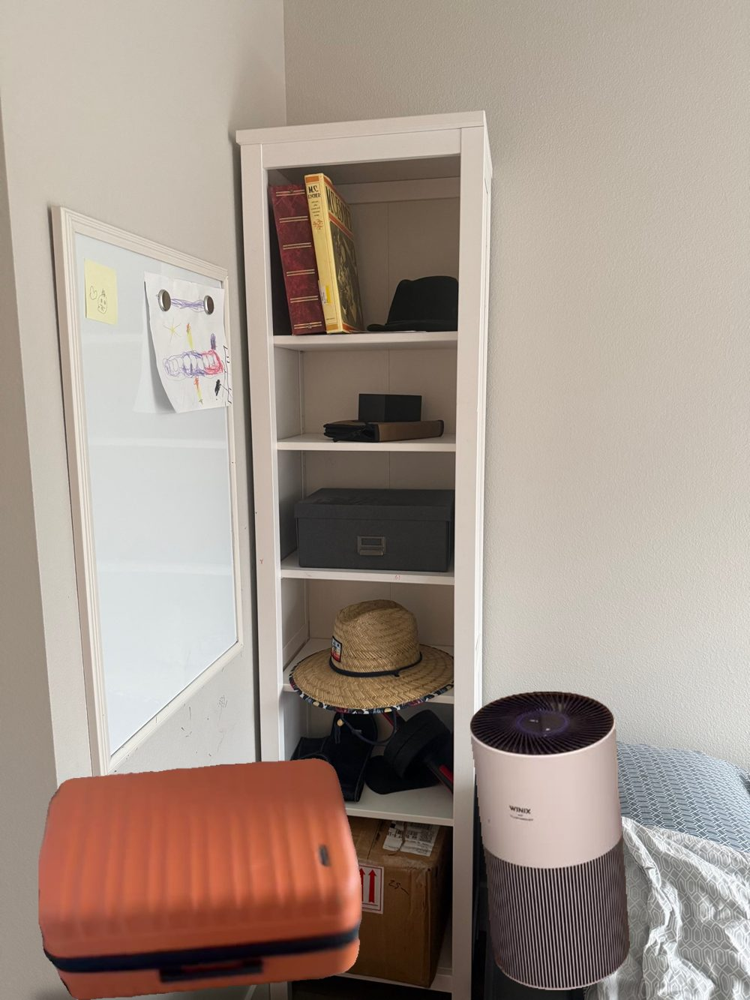
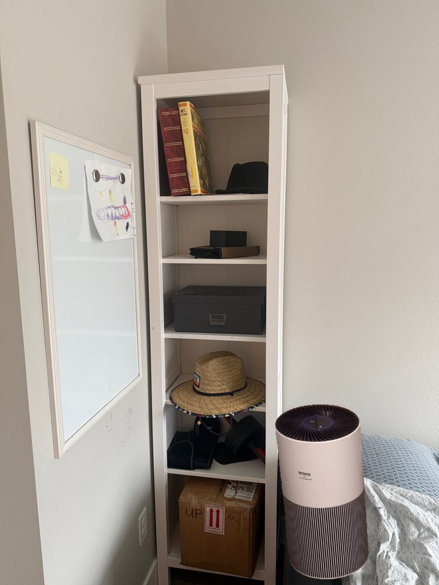
Augustus is the landlord: a full-grown rhino in a black gi, red belt, the landlord's keys, brows set permanently stern. His rental stands empty, and empty earns nothing. So the room is furnished the way everything in this book is furnished, from real listings at real asking prices: a Levoit purifier listed at $50 in Fairview, a Samsonite suitcase at $60 in Vancouver. Total to fill at ask: $110. The placed photos are stand-ins, labeled on the picture itself, because the marketplace will not release the original listing photos. The listings, the prices and the receipts are real.
WHAT THE TOOL DID
The fill ran live on Oct 31, 2026, and an independent check recomputed it from the files alone: 12 of 12 checks passed. The placed pixels are the receipted cutouts' own pixels, recounted after placement. Take the suitcase back out and its whole footprint returns pixel-identical. Spend on the run: $0. The listings were free reads and the cutouts already existed. No model was called for the fill or the removal; both ran locally in the tool.
0 changedpurifier over 100,387 placed pixels, suitcase over 172,867, and 0 across the removed suitcase's whole footprint
$110total to fill at ask, two live listings
And Dustin, on the next tile
In the film's dashboard of story tiles, one tile carries a name and a job and nothing else: Dustin, move-out. No beat of his own, no scene. He surfaces once more in the final lineup, and that is his whole film. The tile still stands for something real: a move-out record is the condition record Story 5 tells in full, rooms photographed as they were left, receipt attached, notes and flaws kept in. Dustin's tile is that record, unopened. The film's materials keep nothing more of him, so this page gives him the honest version: a name, a tile, and the record it stands for, at a length the film could not afford.
Measurements without a tape measure
A printed card in the photo is all the ruler it needs.
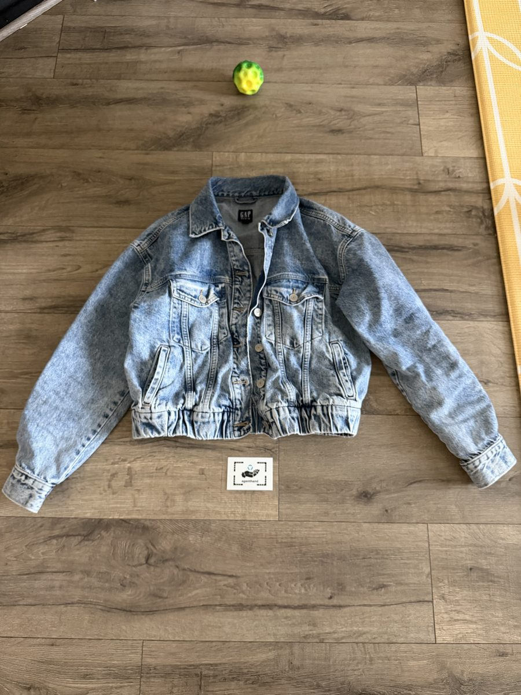
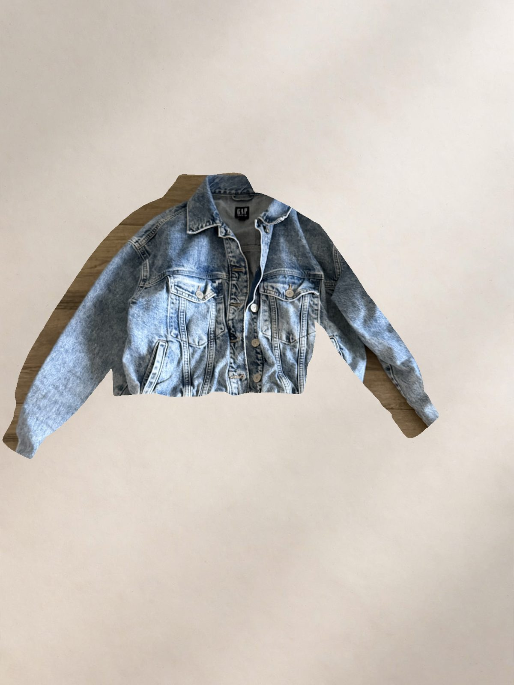
A buyer always asks the same question: how big is it, really? Hikaru lays the garment flat, puts a printed agenthand card beside it, and takes one photo. The card is a known size, so the photo becomes measurable, and the listing gets real numbers instead of "size M, runs smallish".
WHAT THE TOOL DID
The estimator reads the card in the photo as its scale, then measures the garment against it and reports each figure with its own error band. The measuring calls no model; the estimator is local code. The mask it measures within came from cut_out (SAM 3.1). On this garment: body length 51.1 cm (±1.0), chest 51.4 cm (±2.6). If the card is too small in the frame to trust, it refuses and says how to retake the shot: "Retake the shot or use a bigger card."
51.1 cm ± 1.0body length, read from one photo with the printed card
Don't trust the receipt. Re-run it.
The most important scene in the film is a command.
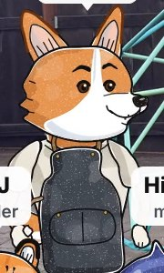
Anyone can print a number on a picture. Clay's job in the story is to be the person who does not take the number's word for it. He runs the check, and the check re-does the counting from the files themselves. If a figure had been edited after the fact, the hashes would not line up and the claim would fail.
WHAT THE TOOL DID
agenthand evidence verify --all walks the Proof Graph, re-hashes every receipt in it, and checks each claim against its receipt. It needs no API key and no trust in whoever sent the photo. A pass means the pixels on file still produce the numbers on the receipt. No model is involved in the check.
Three more, at shelf speed
The film gives these three a few seconds each. Here they get a panel each.
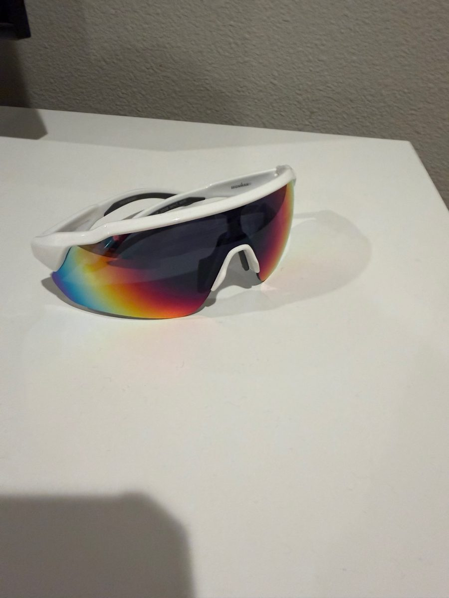
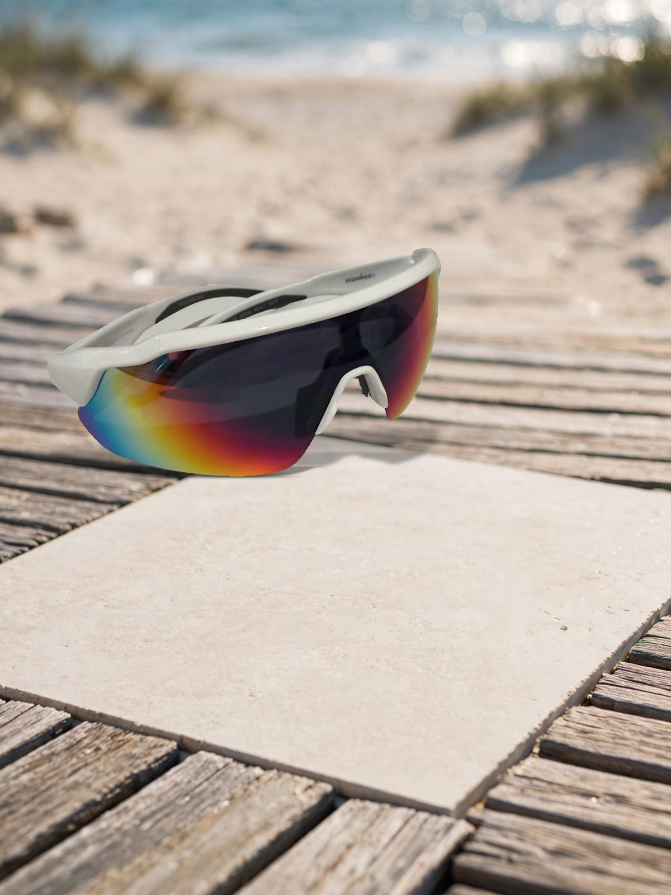
Sunglasses
Small, glossy, and easy to fake. Staged instead, from the seller's own photo.
Receipt: ran the full chain: identify (Muse Spark 1.3), cut_out (SAM 3.1), draw (Muse Image 1.0); the staged frame compares pixel-for-pixel against the cut from this photo before it ships.
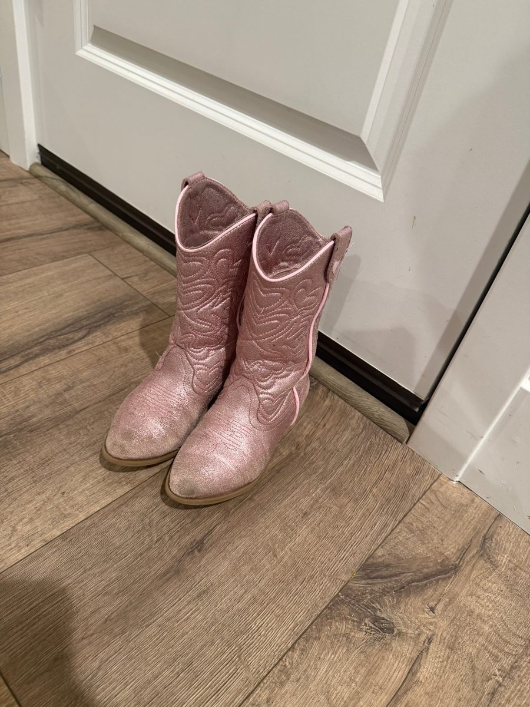
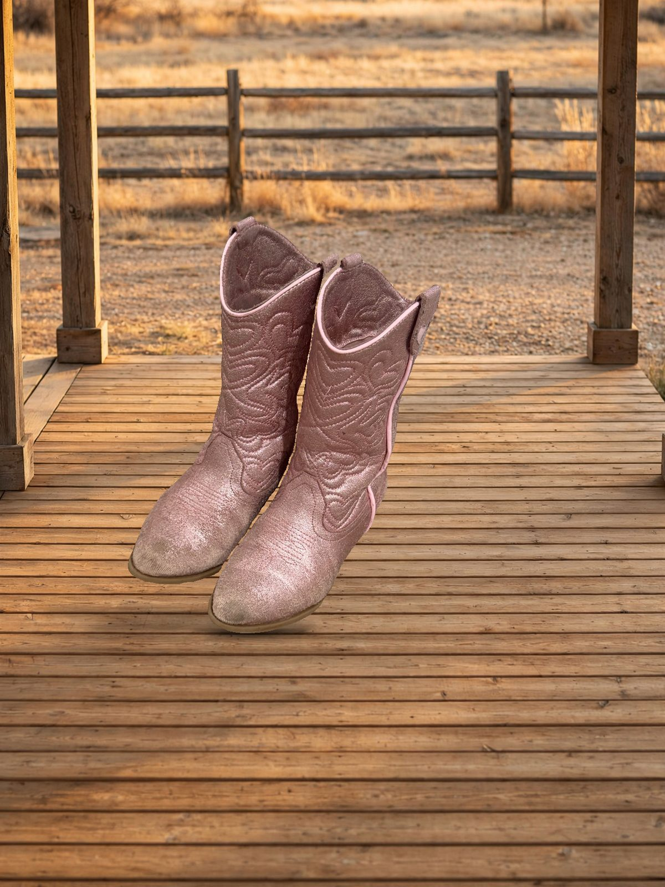
Boots
Scuffs and all. A staged photo that kept the wear is worth more than a perfect render.
Receipt: same chain as the suitcase: identify (Muse Spark 1.3), cut_out (SAM 3.1), draw (Muse Image 1.0), then the compare.
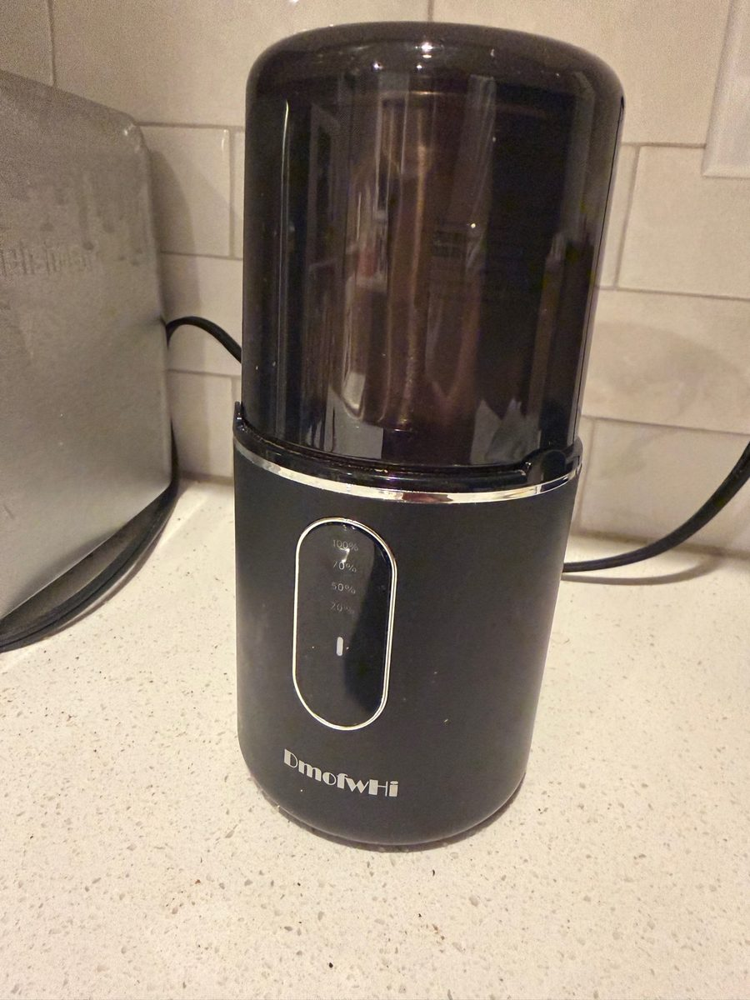
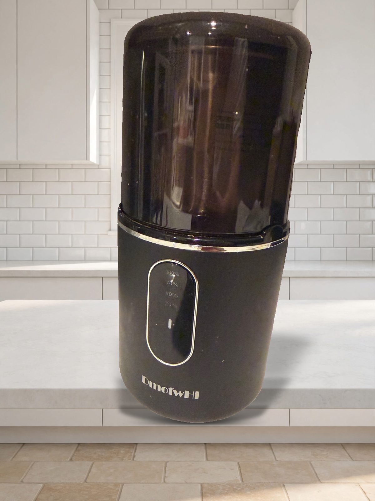
Angle grinder
Tools sell on condition. The condition in the staged shot is the condition in the garage.
Receipt: same three tools, same pixel-for-pixel compare, through the shipping build, start to finish.
Everyone wins
The film closes on a lineup, under one banner: buyer, seller, homeowner, contractor, mover, home buyer, agent, landlord, tenant, driver, adjuster. Ten of them carry the stories in this book. The rest stand in the lineup, one name for each way the tool gets used.
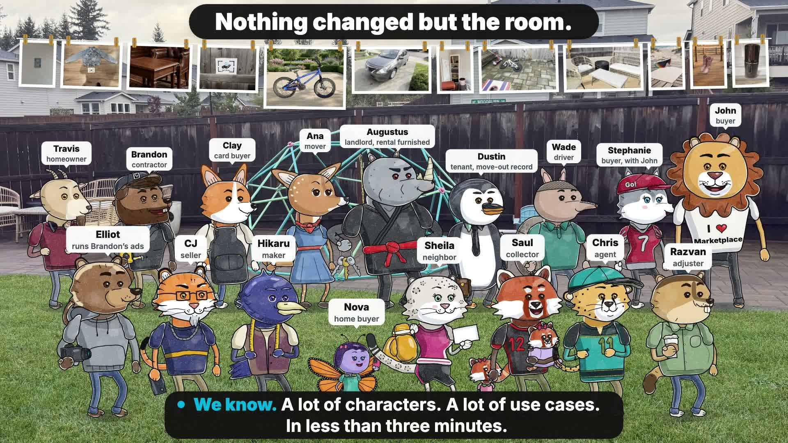
The closing frame of the submitted film, labels and all.
John · buyer
The lion in the I love Marketplace shirt, furnishing a rental one listing at a time. Before he messages a single seller, agenthand drops each find into a photo of his own room at its real asking price, so he can judge the purifier or the suitcase against his own walls first.
Use case: see a listing in your room, at its real price, before you spend anything. Story 2.
Stephanie · buyer
The husky in her favorite team's colors, hunting deals alongside John. When a listing photo looks too clean to trust, she checks its receipt before driving across town: the room in the photo can be staged, the product pixels cannot be faked.
Use case: re-check a seller's staged photo before you buy, so the item that arrives is the item in the picture. Story 2.
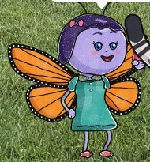
Nova · home buyer
The butterfly with plans for the backyard. Her dream yard gets staged into the real yard photo and priced piece by piece from real local listings, so the plan arrives with a bill she can argue with.
Use case: stage the yard you want into the yard you have, with a real price on every piece. Story 6.
Travis · homeowner
The goat homeowner with a fence to fix. He photographs the damage as it stands, sends Brandon the photos with their receipts attached, and the bid rests on files anyone can re-check instead of on his word.
Use case: send a contractor photos whose condition is proven, flaws and all. Story 4.
Brandon · contractor
The dog in the work jacket who prices jobs from other people's photos. He opens Travis's packet, re-runs the receipt check himself, and bids knowing the fence in the photos is the fence that is actually standing there.
Use case: verify a customer's photos before you price the work, not after you arrive. Story 4.
Clay · card buyer
The fox who buys collector cards from photos and does not take a receipt's word for anything. He re-runs the check, and the check re-counts the pixels from the stored files, so a retouched corner or a swapped card shows up before his money moves.
Use case: re-verify a collectible's photo with one command before you pay for it. Story 9.
Ana · mover
The deer photographing every room she is leaving. Each photo becomes a condition record with its receipt and her notes attached, scratches and scuffs kept in, so move-out day ends with files instead of an argument.
Use case: a move-out condition record the landlord can open and re-check from a link. Story 5.
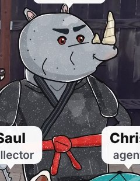
Augustus · landlord
The rhino in the black gi and red belt, brows set permanently stern. His rental stands empty, so he stages it full of furniture from real listings at real asking prices, and any tenant can check that the room itself was never altered.
Use case: furnish an empty rental from real listings, priced per piece, with the room's own pixels proven untouched. Story 7.
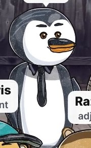
Dustin · tenant
The penguin tenant who learned the deposit lesson the expensive way, once. Now he photographs every wall and floor the week he moves in, receipts attached, so his side of the condition record exists before anyone can argue about a stain.
Use case: your own move-in and move-out record, receipt attached, ready before a deposit dispute starts. Story 7.
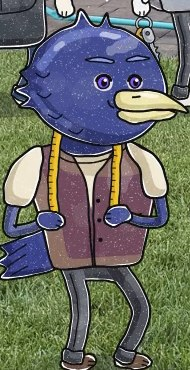
Hikaru · maker
The blue bird with a measuring tape around his neck and no patience for guessed sizes. He lays a garment flat next to the printed agenthand card, takes one photo, and gets real measurements a buyer can trust.
Use case: real measurements from a single photo, so a listing can state the size and prove it. Story 8.
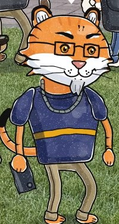
CJ · seller
The tiger who sells from his phone, photographing things where they sit: garage, driveway, spare room. agenthand restages each shot into a setting that sells, while the item itself stays pixel for pixel the one he owns, scuffs and dusty corners included.
Use case: turn a cluttered garage photo into a listing photo, with a receipt proving nothing on the item was cleaned up.
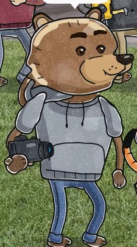
Elliot · marketer
The bear with the camera, shooting product photos for people who sell online. He restages one honest photo for each shop and each feed instead of reshooting, and every version carries the same receipt, so the marketing can change its clothes but never the product.
Use case: one product photo, restaged for every channel, with proof the product never changed between versions.
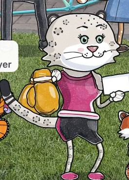
Sheila · neighbor
The snow leopard everyone on the street borrows from: ladders, party gear, the good folding chairs. She photographs each thing as it leaves her garage, receipt attached, so what comes back can be checked against what went out.
Use case: a handover record both sides can check, so lending to neighbors stays friendly.
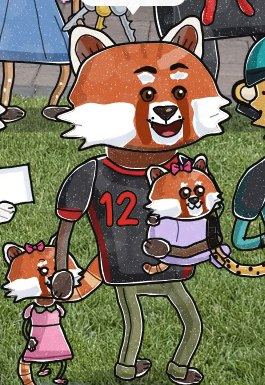
Saul · collector
The red panda collector, family in tow, buying pieces he may only ever see in photographs. The receipt on a listing photo tells him the item pictured is the item that ships, not a cleaner stand-in swapped in for the camera.
Use case: buy collectibles from photos, with proof the pictured item is the shipped item.
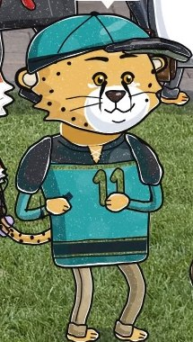
Chris · agent
The cheetah who lists homes for a living and knows buyers zoom in. He stages an empty room with furniture from real listings at real prices, while the room's own walls, floors and light stay exactly as photographed, which keeps him honest and out of trouble.
Use case: stage a listing's rooms while proving the property itself was never retouched.
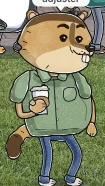
Razvan · adjuster
The Himalayan marmot who reads damage claims, coffee in hand. When a claimant's photos arrive with receipts attached, he can re-verify months later that the dent, the stain or the crack in the file is the one photographed on the day, unedited since.
Use case: claim photos that can be re-verified long after they were taken, so the file settles what the damage looked like.
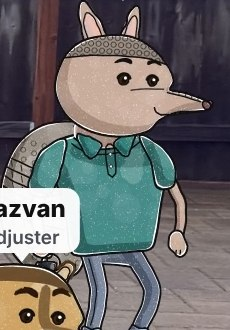
Wade · driver
The armadillo who picks up and delivers the things everyone else here is buying and selling. He photographs each item at pickup and again at the door, receipts on both ends, so a scratch argument gets two checkable records instead of two opinions.
Use case: pickup and delivery photos with proof attached, one record at each end of the trip.
How it works
Three tools, four Meta models, one rule: a model paints the room; the product stays the seller's own pixels.
Muse Spark 1.3
Reads the photo, plans the cut, writes the listing copy.
SAM 3.1
Draws the product mask, the pixels that will be treated as untouchable.
Muse Image 1.0
Generates the background plate only. The product layer is composited back verbatim.
A fourth model does one more job: when a room run is driven by a narrated walkthrough, the open-weight Muse Spark Open, served through Baseten, returns the transcript and the sale intent in one call. In one real room run, six items were sorted, staged or recorded that way: 352,597 pixels checked, 0 changed.
Built twice, kept honest
agenthand exists as a fast Rust build and a Python reference build, and both run the same Differential Conformance Suite: one interface schema and one set of shared test vectors, byte-identical in each tree. The two builds cross-check each other; drift between them is a defect, and the suite has caught real drift.
416 passed · 0 failed
The shipping MCP server, frozen for the submission.
648 passed · 0 failed
The living spec and fallback, held to the same vectors.
Keyless, offline
A recorded run ships in the repo, so anyone can re-check the evidence without an API key.
The Proof Graph
Every run, call, receipt and claim from the build sits in one queryable graph, and every claim in the Proof Graph traces to a receipt in it.
Receipts root (sha256): 1179530968c27879e3d84aa5475998a475cba64ba5b95f1823a8e7310174ecc3 · re-check any claim with agenthand evidence verify --all
Get agenthand
An MCP server: install the bundle, add your keys, and your agent gains the three tools.
Installable bundle (.mcpb)
agenthand-0.3.0-linux-x86_64.mcpb
agenthand-0.3.0-macos-arm64.mcpb
agenthand-0.3.0-macos-x86_64.mcpb
Full setup, including adding a Meta Model API key and a Baseten key for room narration, is in the repo README.
Check the claims yourself, no key needed
# from the repo: re-verify every receipt agenthand evidence verify --all # a frozen recorded run also ships in the repo, # so the evidence can be replayed offline